library('dplyr') # for data manipulation
library('ggplot2') # for plotting
library('cmdstanr') #for model fitting
library('rethinking') #for model fitting
library('fs') #for file pathThis is part two of a tutorial illustrating how to perform a Bayesian analysis of longitudinal data using a multilevel/hierarchical/mixed-effects setup. In this part, we’ll fit the simulated data using the rethinking package.
I assume you’ve read part 1, otherwise this post won’t make much sense. You might even want to open that first part in a separate tab for quick comparison.
Introduction
In the previous post, I showed a setup where some continuous outcome data (in our case, virus load) was collected over time for several individuals. Those individuals differed by some characteristic (in our case, dose at which they got infected). I specified several models that are useful for both fitting the data, and creating simulations. We’ve done the simulating part, now we’ll start fitting models to that data.
The advantage of fitting to simulated data is that we know exactly what model and what parameters produced the data, so we can compare our model estimates to the truth (i.e. the parameter and model settings that were used to generate the data) to see how our models perform. It is always good to do that to get some confidence that your models make sense, before you apply them to real data. For the latter, you don’t know what the “truth” is, so you have to trust whatever your model tells you.
Fitting Bayesian models can take a good bit of time (hours, depending on the settings for the fitting routine). It is generally advisable to place code that takes a while to run into its own R script, run that script and then save the results for further processing. This is in fact what I did here. I wrote 2 separate R scripts, one that does the fitting and one that does the exploration of the model fits. The code shown below comes from those 2 scripts. There is some value in re-coding yourself by copying and pasting the code chunks from this tutorial, but if you just want to get all the code from this post you can find it here and here.
R Setup
We’ll start with loading needed packages. Make sure these packages are installed. Since rethinking uses the Stan Bayesian modeling engine, you need to install it too. It is in my experience mostly seamless, but at times it seems to be tricky. I generally follow the instructions on the rethinking website and it has so far always worked for me. It might need some fiddling, but you should be able to get them all to work.
Data loading
We’ll jump right in and load the data we generated in the previous tutorial. In this example, I’m fitting the data that was generated by model 3 since it shows the most realistic pattern. You can try to fit to the other 2 datasets and see what you find (I’ll show an example in this part of the tutorial. It is not necessarily the case that the model that produced a certain dataset is also the one that fits it best.
simdat <- readRDS("simdat.Rds")
#using dataset 3 for fitting
#also removing anything in the dataframe that's not used for fitting
#makes the ulam/Stan code more robust
fitdat=list(id=simdat[[3]]$id,
outcome = simdat[[3]]$outcome,
dose_adj = simdat[[3]]$dose_adj,
time = simdat[[3]]$time)
#pulling out number of observations
Ntot = length(unique(simdat$m3$id))Fitting with rethinking
We’ll start by fitting the different models we discussed in part 1 using the rethinking package. The main function in that package, which does the fitting using Stan, is ulam.
First, we’ll specify each model, then we’ll run them all in a single loop.
Model 1
These lines of code specify the full set of equations for our model 1. Note how closely the R code resembles the mathematical notation. That close match between math and code is one of the nice features of rethinking/ulam. Also note the indexing of the parameters a0 and b0 by id, which indicates that each individual has their own values.
#wide-prior, no-pooling model
#separate intercept for each individual/id
#2x(N+1)+1 parameters
m1 <- alist(
# distribution of outcome
outcome ~ dnorm(mu, sigma),
# main equation for time-series trajectory
mu <- exp(alpha)*log(time) - exp(beta)*time,
#equations for alpha and beta
alpha <- a0[id] + a1*dose_adj,
beta <- b0[id] + b1*dose_adj,
#priors
a0[id] ~ dnorm(2, 10),
b0[id] ~ dnorm(0.5, 10),
a1 ~ dnorm(0.3, 1),
b1 ~ dnorm(-0.3, 1),
sigma ~ cauchy(0,1)
)You might have noticed that I chose some of the values in the priors to be different than the values we used to generate the simulated data. I don’t want to make things too easy for the fitting routine 😁. We want to have the fitting routine “find” the right answer (parameter estimates). Hopefully, even if we don’t start at the right values, we’ll end up there.
Model 2
Now we’ll set up model 2 exactly as for model 1 but with some of the priors changed as discussed previously. Specifically, the priors now force the individual-level parameters to be essentially all the same. Note that - as you will see below - this model is not a good model, and if one wanted to not allow the \(a_0\) and \(b_0\) parameters to have any individual level variation, one should just implement and run the model 2 alternative I describe below. We’ll run this model anyway, to just illustration and to see what happens.
#narrow-prior, full-pooling model
#2x(N+2)+1 parameters
m2 <- alist(
outcome ~ dnorm(mu, sigma),
mu <- exp(alpha)*log(time) - exp(beta)*time,
alpha <- a0[id] + a1*dose_adj,
beta <- b0[id] + b1*dose_adj,
a0[id] ~ dnorm(mu_a, 0.0001),
b0[id] ~ dnorm(mu_b, 0.0001),
mu_a ~ dnorm(2, 1),
mu_b ~ dnorm(0.5, 1),
a1 ~ dnorm(0.3, 1),
b1 ~ dnorm(-0.3, 1),
sigma ~ cauchy(0,1)
)Model 3
This is the same as model 1 but with different values for the priors. These priors are somewhat regularizing and more reasonable. As we’ll see, the results are similar to those from model 1, but the model runs more efficiently and thus faster.
#regularizing prior, partial-pooling model
m3 <- alist(
outcome ~ dnorm(mu, sigma),
mu <- exp(alpha)*log(time) - exp(beta)*time,
alpha <- a0[id] + a1*dose_adj,
beta <- b0[id] + b1*dose_adj,
a0[id] ~ dnorm(2, 1),
b0[id] ~ dnorm(0.5, 1),
a1 ~ dnorm(0.3, 1),
b1 ~ dnorm(-0.3, 1),
sigma ~ cauchy(0,1)
)Model 4
This is our adaptive pooling model. For this model, we specify a few extra distributions.
#adaptive priors, partial-pooling model
#2x(N+2)+1 parameters
m4 <- alist(
outcome ~ dnorm(mu, sigma),
mu <- exp(alpha)*log(time) - exp(beta)*time,
alpha <- a0[id] + a1*dose_adj,
beta <- b0[id] + b1*dose_adj,
a0[id] ~ dnorm(mu_a, sigma_a),
b0[id] ~ dnorm(mu_b, sigma_b),
mu_a ~ dnorm(2, 1),
mu_b ~ dnorm(0.5, 1),
sigma_a ~ cauchy(0, 1),
sigma_b ~ cauchy(0, 1),
a1 ~ dnorm(0.3, 1),
b1 ~ dnorm(-0.3, 1),
sigma ~ cauchy(0, 1)
)A few model alternatives
There are a few model alternatives I also want to consider. The first one is a version of model 2 that gets rid of individual-level parameters and instead has only population-level parameters. I discussed this model in part 1 of the tutorial and called it 2a there. Here is the model definition
Model 2a
#full-pooling model, population-level parameters only
#2+2+1 parameters
m2a <- alist(
outcome ~ dnorm(mu, sigma),
mu <- exp(alpha)*log(time) - exp(beta)*time,
alpha <- a0 + a1*dose_adj,
beta <- b0 + b1*dose_adj,
a0 ~ dnorm(2, 0.1),
b0 ~ dnorm(0.5, 0.1),
a1 ~ dnorm(0.3, 1),
b1 ~ dnorm(-0.3, 1),
sigma ~ cauchy(0,1)
)Note that a0 and b0 are not indexed by id anymore and are now single numbers, instead of \(N\) values as before.
Model 4a
Another model I want to look at is a variant of model 4. This is in fact the same model as model 4, but written in a different way. A potential problem with model 4 and similar models is that parameters inside parameters can lead to inefficient or unreliable numerical results when running your Monte Carlo routine (in our case, this is Stan-powered Hamilton Monte Carlo). It is possible to rewrite the model such that it is the same model, but it looks different in a way that makes the numerics often run better. It turns out for our example, model 4 above runs ok. But it’s a good idea to be aware of the fact that one can re-write models if needed, therefore I decided to include this model alternative here.
The above model 4 is called a centered model and the re-write for model 4a is called a non-centered model. The trick is to pull out the parameters from inside the distributions for \(a_{0,i}\) and \(b_{0,i}\). The non-centered model looks like this:
#adaptive priors, partial-pooling model
#non-centered
m4a <- alist(
outcome ~ dnorm(mu, sigma),
mu <- exp(alpha)*log(time) - exp(beta)*time,
#rewritten to non-centered
alpha <- mu_a + az[id]*sigma_a + a1*dose_adj,
beta <- mu_b + bz[id]*sigma_b + b1*dose_adj,
#rewritten to non-centered
az[id] ~ dnorm(0, 1),
bz[id] ~ dnorm(0, 1),
mu_a ~ dnorm(2, 1),
mu_b ~ dnorm(0.5, 1),
sigma_a ~ cauchy(0, 1),
sigma_b ~ cauchy(0, 1),
a1 ~ dnorm(0.3, 1),
b1 ~ dnorm(-0.3, 1),
sigma ~ cauchy(0, 1)
)Again, this model is mathematically the same as the original model 4. If this is confusing and doesn’t make sense (it sure wouldn’t to me if I just saw that for the first time 😁), check the Statistical Rethinking book. (And no, I do not get a commission for continuing to point you to the book, and I wish there was a free online version (or a cheap paperback). But it is a great book and if you want to learn this kind of modeling for real, I think it’s worth the investment.)
Model 5
Another model, which I’m calling model 5 here, is one that does not include the dose effect. That means, parameters \(a_1\) and \(b_1\) are gone. Otherwise I’m following the setup of model 1. The reason I’m doing this is because on initial fitting of the above models, I could not obtain estimates for the dose parameters I used for the simulation. I noticed strong correlations between posterior distributions of the model parameters. I suspected an issue with non-identifiable parameters (i.e, trying to estimate more parameters than the data supports). To figure out what was going on, I wanted to see how a model without the dose component would perform. It turned out that the main reason things didn’t look right was because I had a typo in the code that generated the data, so what I thought was the generating model actually wasn’t 🤦. A helpful colleague and reader pointed this out. Once I fixed it, things made more sense. But I figured it’s instructive to keep this model anyway.
#no dose effect
#separate intercept for each individual/id
#2xN+1 parameters
m5 <- alist(
# distribution of outcome
outcome ~ dnorm(mu, sigma),
# main equation for time-series trajectory
mu <- exp(alpha)*log(time) - exp(beta)*time,
#equations for alpha and beta
alpha <- a0[id],
beta <- b0[id],
#priors
a0[id] ~ dnorm(2, 10),
b0[id] ~ dnorm(0.5, 10),
sigma ~ cauchy(0,1)
)Setting starting values
Any fitting routine needs to start with some parameter values and then from there tries to improve. Stan uses a heuristic way of picking some starting values. Often that works, sometimes it fails initially but then the routine fixes itself, and sometimes it fails all the way. In either case, I find it a good idea to specify starting values, even if they are not strictly needed. And it’s good to know that this is possible and how to do it, just in case you need it at some point. Setting starting values gives you more control, and you also know exactly what should happen when you look at for instance the traceplots of the chains.
## Setting starting values
#starting values for model 1
startm1 = list(a0 = rep(2,Ntot), b0 = rep(0.5,Ntot), a1 = 0.3 , b1 = -0.3, sigma = 1)
#starting values for model 2
startm2 = list(a0 = rep(2,Ntot), b0 = rep(0.5,Ntot), mu_a = 2, mu_b = 1, a1 = 0.3 , b1 = -0.3, sigma = 1)
#starting values for model 3
startm3 = startm1
#starting values for models 4 and 4a
startm4 = list(mu_a = 2, sigma_a = 1, mu_b = 1, sigma_b = 1, a1 = 0.3 , b1 = -0.3, sigma = 1)
startm4a = startm4
#starting values for model 2a
startm2a = list(a0 = 2, b0 = 0.5, a1 = 0.3, b1 = -0.3, sigma = 1)
#starting values for model 5
startm5 = list(a0 = rep(2,Ntot), b0 = rep(0.5,Ntot), sigma = 1)
#put different starting values in list
#need to be in same order as models below
startlist = list(startm1,startm2,startm3,startm4,startm2a,startm4,startm5)Note that we only specify values for the parameters that are directly estimated. Parameters that are built from other parameters (e.g. \(\alpha\) and \(\beta\)) are computed and don’t need starting values.
For some more detailed discussion on starting values, see for instance this post by Solomon Kurz. He uses brms in his example, but the same idea applies with any package/fitting routine. He also explains that it is a good idea to set different starting values for each chain. I am not sure if/how this could be done with rethinking, it seems ulam does not support this? But it can be done for brms (and I’m doing it there).
Model fitting
Now that we specified all models, we can loop through all models and fit them. First, some setup before the actual fitting loop.
#general settings for fitting
#you might want to adjust based on your computer
warmup = 6000
iter = warmup + floor(warmup/2)
max_td = 18 #tree depth
adapt_delta = 0.9999
chains = 5
cores = chains
seed = 4321
#stick all models into a list
modellist = list(m1=m1,m2=m2,m3=m3,m4=m4,m2a=m2a,m4a=m4a,m5=m5)
# set up a list in which we'll store our results
fl = vector(mode = "list", length = length(modellist))
#setting for parameter constraints
constraints = list(sigma="lower=0",sigma_a="lower=0",sigma_b="lower=0")The first code block defines various settings for the ulam function. Look at the help file for details. Then we place all models into a list, set up an empty list for our fit results, and specify the data needed for fitting. The final command enforces some constraints on parameters. For our model, we want Half-Cauchy distributions for all variance parameters to ensure they are positive. Above, I specified them as Cauchy. There is no direct Half-Cauchy implementation. The way one achieves one is to tell ulam/Stan that the values for those parameters need to be positive. That’s what the constraints line in the code below does.
Looping over each model and fitting it. In addition to the actual fitting call to ulam, I’m also printing a few messages and storing the model name and the time it took to run. That’s useful for diagnostic. It’s generally a good idea to do short runs/chains until things work, then do a large run to get the actual result. Recording the running time helps decide how long a real run can be and how long it might take.
# fitting models
#loop over all models and fit them using ulam
for (n in 1:length(modellist))
{
cat('************** \n')
cat('starting model', names(modellist[n]), '\n')
tstart=proc.time(); #capture current time
#run model fit
fl[[n]]$fit <- ulam(flist = modellist[[n]],
data = fitdat,
start=startlist[[n]],
constraints=constraints,
log_lik=TRUE, cmdstan=TRUE,
control=list(adapt_delta=adapt_delta,
max_treedepth = max_td),
chains=chains, cores = cores,
warmup = warmup, iter = iter,
seed = seed
)# end ulam
#capture time taken for fit
tdiff=proc.time()-tstart;
runtime_minutes=tdiff[[3]]/60;
cat('model fit took this many minutes:', runtime_minutes, '\n')
cat('************** \n')
#add some more things to the fit object
fl[[n]]$runtime = runtime_minutes
fl[[n]]$model = names(modellist)[n]
} #end fitting of all models
# saving the list of results so we can use them later
# the file is too large for GitHub
# thus I am saving here to a local folder
# adjust accordingly for your setup
filepath = fs::path("D:","Dropbox","datafiles","longitudinalbayes","ulamfits", ext="Rds")
saveRDS(fl,filepath)Explore model fits
Now we are ready to explore the model fitting results. All fits are in the list called fl. For each model the actual fit is in fit, the model name in model and the run time in runtime. Note that the code chunks below come from this second R script, thus some things are repeated (e.g., loading of simulated data).
# loading list of previously saved fits.
# useful if we don't want to re-fit
# every time we want to explore the results.
# since the file is too large for GitHub
# it is stored in a local folder
# adjust accordingly for your setup
filepath = fs::path("D:","Dropbox","datafiles","longitudinalbayes","ulamfits", ext="Rds")
fl <- readRDS(filepath)
# also load data file used for fitting
simdat <- readRDS("simdat.Rds")
#pull our the data set we used for fitting
#if you fit a different one of the simulated datasets, change accordingly
fitdat <- simdat$m3
#contains parameters used for fitting
pars <- simdat$m3parsYou should explore your model fits carefully. Look at the trace-plots or trank-plots with the traceplot() and trankplot() functions in rethinking. Make sure the chains are looking ok. You can also use the summary function to get some useful information on our model. To go further, you can call stancode() to get the actual Stan code for the model. This can be helpful to both learn Stan, and to check if the model translates into Stan code the way you expected it to.
I’m showing a few of those explorations to illustrate what I mean. For any real fitting, it is important to carefully look at all the output and make sure everything worked as expected and makes sense.
To keep output manageable, I’m using model 2a here, which has no individual-level parameters, thus only a total of 5.
# Model 2a summary
show(fl[[5]]$fit)Hamiltonian Monte Carlo approximation
15000 samples from 5 chains
Sampling durations (seconds):
warmup sample total
chain:1 22.35 8.14 30.49
chain:2 22.90 14.96 37.86
chain:3 22.07 11.31 33.38
chain:4 21.61 14.70 36.31
chain:5 22.59 14.32 36.91
Formula:
outcome ~ dnorm(mu, sigma)
mu <- exp(alpha) * log(time) - exp(beta) * time
alpha <- a0 + a1 * dose_adj
beta <- b0 + b1 * dose_adj
a0 ~ dnorm(2, 0.1)
b0 ~ dnorm(0.5, 0.1)
a1 ~ dnorm(0.3, 1)
b1 ~ dnorm(-0.3, 1)
sigma ~ cauchy(0, 1)# Model 2a trace plots
traceplot(fl[[5]]$fit, pars = c("a0","b0","a1","b1","sigma"))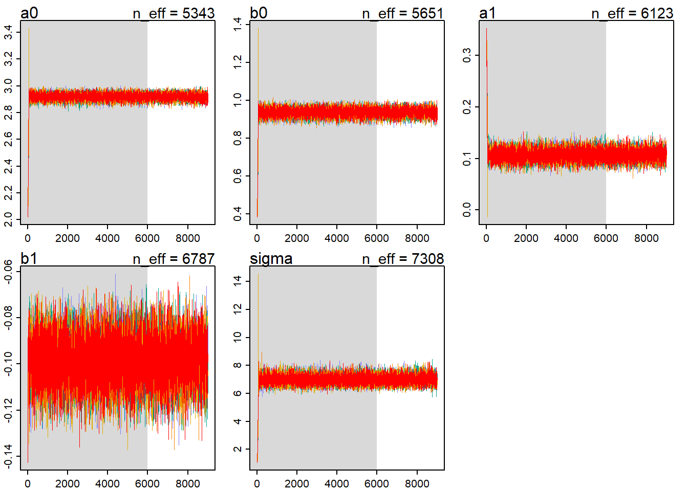
# Model 2a trank plots
trankplot(fl[[5]]$fit, pars = c("a0","b0","a1","b1","sigma"))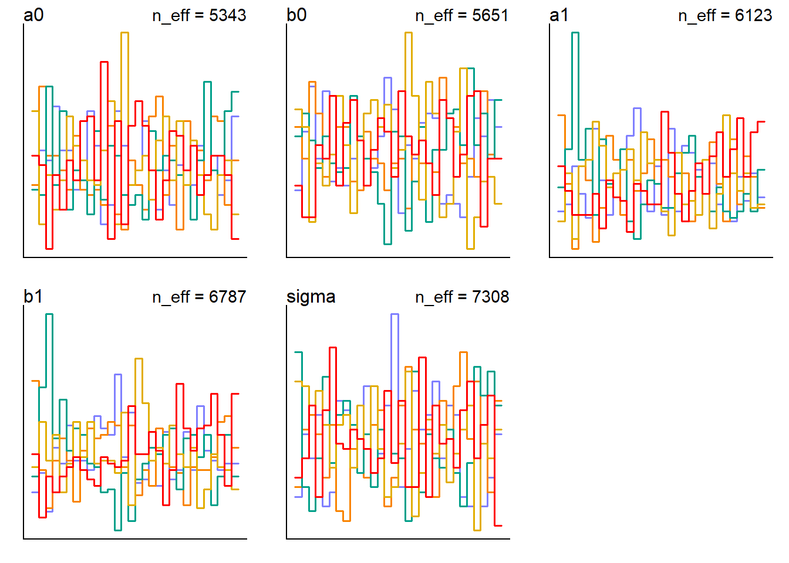
# Model 2a pair plot
# Correlation between posterior samples of parameters
pairs(fl[[5]]$fit, pars = c("a0","b0","a1","b1","sigma"))Warning in par(usr): argument 1 does not name a graphical parameter
Warning in par(usr): argument 1 does not name a graphical parameter
Warning in par(usr): argument 1 does not name a graphical parameter
Warning in par(usr): argument 1 does not name a graphical parameter
Warning in par(usr): argument 1 does not name a graphical parameter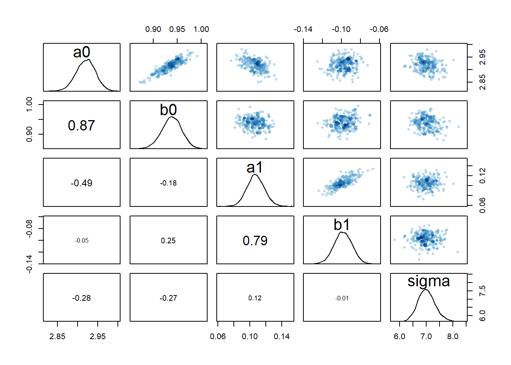
Based on these diagnostic outputs, it seems the chains converged well, at least for model 2a. One interesting feature is the strong correlation between the parameters \(a_0\) and \(b_0\) and also \(a_1\) and \(b_1\). Recall that \(\alpha\) determined the initial increase of the function, \(\beta\) the eventual decline. Both parameters determine the shape of the deterministic trajectory for all times, so large values for both can lead to somewhat similar results as small values for both. That is the reason for the correlations we see (and this is a different effect from the correlations we’ll discuss below).
Models 1 and 3
Now I’ll look at bit more carefully at the different models. We start by comparing fits for models 1 and 3. Those two are essentially the same model, with the only difference being wider priors for the individual-level parameters in model 1. It is worth mentioning that when running the fitting routine, model 1 takes much longer to fit than model 3. With the settings I used, runtimes were 331 versus 57 minutes. The wide priors made the fitting efficiency poor. But let’s see how it impacts the results.
First, we explore priors and posteriors. They are easy to extract from the models using the extract.prior() and extract.samples() functions from rethinking.
#get priors and posteriors for models 1 and 3
m1prior <- extract.prior(fl[[1]]$fit, n = 1e4)
m1post <- extract.samples(fl[[1]]$fit, n = 1e4)
m3prior <- extract.prior(fl[[3]]$fit, n = 1e4)
m3post <- extract.samples(fl[[3]]$fit, n = 1e4)Now we can plot the distributions. Note that for the individual-level parameters \(a_0\) and \(b_0\), the plots show the distribution across all individuals. The dashed lines show the priors, the solid the posteriors. Black is model 1, blue is model 3.
#showing density plots for a0
plot(density(m1prior$a0), xlim = c (-20,20), ylim = c(0,2), lty=2)
lines(density(m1post$a0), lty=1)
lines(density(m3prior$a0), col = "blue", lty=2)
lines(density(m3post$a0), col = "blue", lty=1)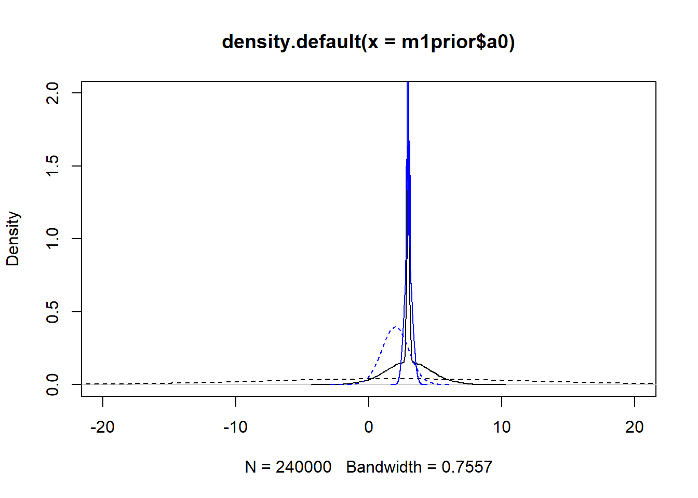
#showing density plots for b0
plot(density(m1prior$b0), xlim = c (-20,20), ylim = c(0,2), lty=2)
lines(density(m1post$b0), lty=1)
lines(density(m3prior$b0), col = "blue", lty=2)
lines(density(m3post$b0), col = "blue", lty=1)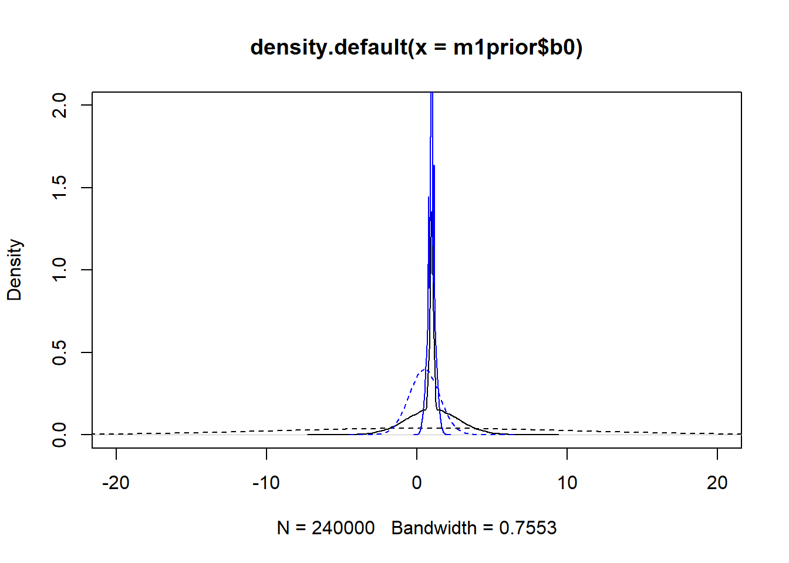
#showing density plots for a1
plot(density(m1prior$a1), xlim = c (-3,3), ylim = c(0,2), lty=2)
lines(density(m1post$a1), lty=1)
lines(density(m3prior$a1), col = "blue", lty=2)
lines(density(m3post$a1), col = "blue", lty=1)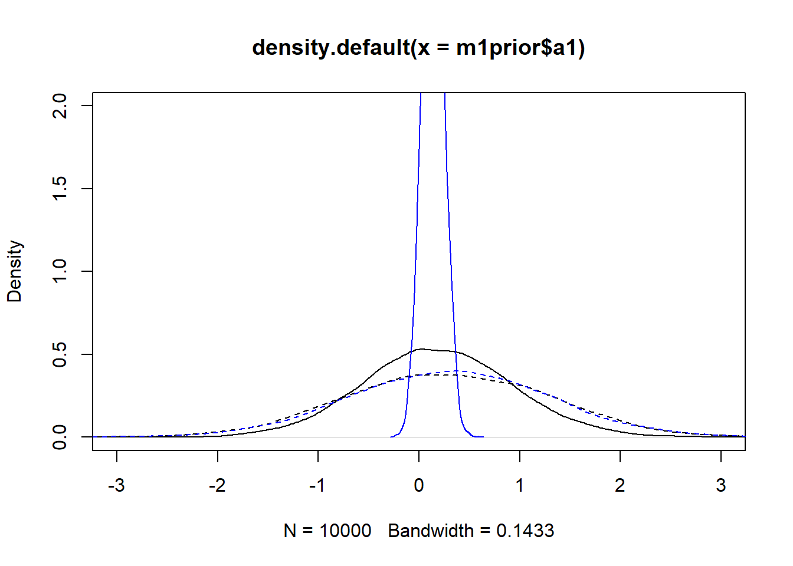
#showing density plots for b1
plot(density(m1prior$b1), xlim = c (-3,3), ylim = c(0,2), lty=2)
lines(density(m1post$b1), lty=1)
lines(density(m3prior$b1), col = "blue", lty=2)
lines(density(m3post$b1), col = "blue", lty=1)
We set up the models to have wider \(a_0\) and \(b_0\) priors for model 1, and the same priors for the \(a_1\) and \(b_1\) parameters. The dashed lines in the figures show that. Looking at the posteriors, we find that changing the priors has an impact, especially for \(a_1\) and \(b_1\). Not only does model 3 lead to more peaked posteriors, they are also not centered at the same values, especially for \(b_1\). I don’t think that’s a good sign. We want the data to dominate the results, the priors should just be there to ensure the models explore the right parameter space efficiently and don’t do anything crazy. The fact that the same model, started with different priors, leads to different posterior distributions is in my opinion concerning. It could be that with more sampling, the posteriors might get closer. Or it might suggest that we are overfitting and have non-identifiability problems here.
One way to check that further is to look at potential correlations between parameter posterior distributions, e.g., using a pairs() plot as shown above. Here are such plots for the parameters associated with \(\alpha\) for model 1. I only plot a few for each dose, otherwise the plots won’t be legible inside this html document. But you can try for yourself, if you make the plot large enough you can fit them all. You can also make plots for model 3 and for the \(b\) parameters, those look very similar.
# all "a" parameters - too big to show
#pairs(fl[[1]]$fit, pars = c("a0","a1"))
# a few parameters for each dose
#low dose
pairs(fl[[1]]$fit, pars = c("a0[1]","a0[2]","a0[3]","a0[4]","a1"))Warning in par(usr): argument 1 does not name a graphical parameter
Warning in par(usr): argument 1 does not name a graphical parameter
Warning in par(usr): argument 1 does not name a graphical parameter
Warning in par(usr): argument 1 does not name a graphical parameter
Warning in par(usr): argument 1 does not name a graphical parameter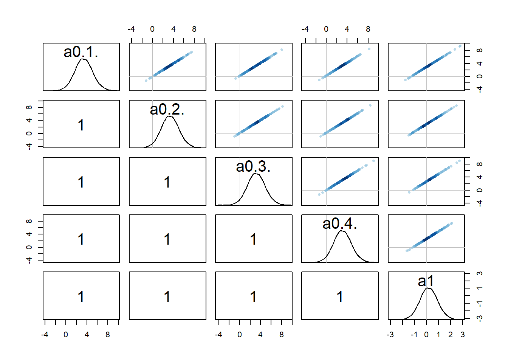
#medium dose
pairs(fl[[1]]$fit, pars = c("a0[8]","a0[9]","a0[10]","a0[11]","a1"))Warning in par(usr): argument 1 does not name a graphical parameter
Warning in par(usr): argument 1 does not name a graphical parameter
Warning in par(usr): argument 1 does not name a graphical parameter
Warning in par(usr): argument 1 does not name a graphical parameter
Warning in par(usr): argument 1 does not name a graphical parameter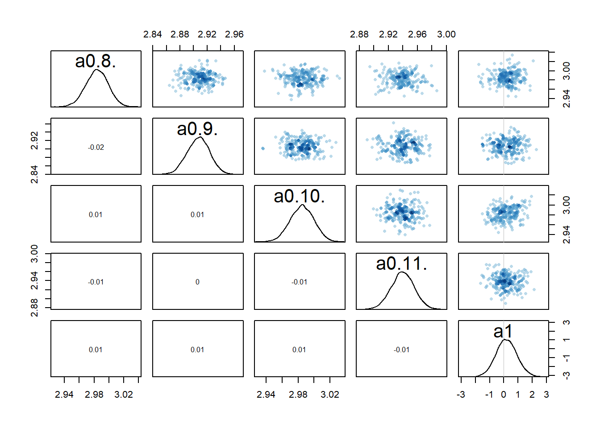
#high dose
pairs(fl[[1]]$fit, pars = c("a0[16]","a0[17]","a0[18]","a0[19]","a1"))Warning in par(usr): argument 1 does not name a graphical parameter
Warning in par(usr): argument 1 does not name a graphical parameter
Warning in par(usr): argument 1 does not name a graphical parameter
Warning in par(usr): argument 1 does not name a graphical parameter
Warning in par(usr): argument 1 does not name a graphical parameter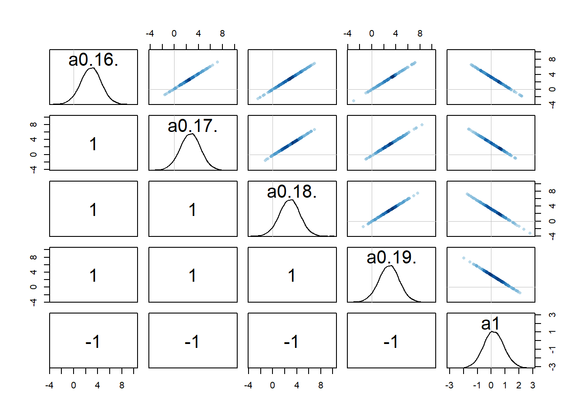
Recall that we set up the model such that dose is non-zero for low and high dose, while for the intermediate dose it drops out of the model. What seems to happen is that if the dose effect, i.e., \(a_1\), is present, there is a strong correlation among that parameter and the individual-level parameters for that dose. That part makes some sense to me. Both \(a_{0,i}\) or \(a_1\) can change \(\alpha\) and thus the trajectory. If one is low, the other might be high, and the reverse, leading to similarly good fits.
Because every \(a_{0,i}\) is correlated with \(a_1\) in this way, this also leads to correlations among the \(a_{0,i}\) values. I am surprised that this is an essentially perfect correlation. Maybe, if I thought about it harder and/or did the math, it would be clear that it needs to be that way. But I haven’t yet, so for now I’m just taking it as given 😁. Overall, this is another sign of that we might be overfitting and have non-identifiability problems, i.e. combinations for different values of \(a_{0,i}\) and \(a_1\) can lead to more or less the same results (everything I write here of course also holds for the \(b_{0,i}\) and \(b_1\) parameters).
Let’s move on and now look at the posterior distributions in numerical form. For that, I use the precis function from rethinking. Instead of printing all the \(N\) different values of \(a_{0,i}\) and \(b_{0,i}\), I compute their means. If you want to see them all, change to depth=2 in the precis function.
# Model 1
a0mean = mean(precis(fl[[1]]$fit,depth=2,"a0")$mean)
b0mean = mean(precis(fl[[1]]$fit,depth=2,"b0")$mean)
print(precis(fl[[1]]$fit,depth=1),digits = 2)48 vector or matrix parameters hidden. Use depth=2 to show them. mean sd 5.5% 94.5% n_eff Rhat4
a1 0.22 0.736 -0.96 1.40 2600 1
b1 -0.21 0.745 -1.40 0.98 2384 1
sigma 1.06 0.052 0.98 1.15 16450 1print(c(a0mean,b0mean))[1] 2.961711 1.005527# Model 3
a0mean = mean(precis(fl[[3]]$fit,depth=2,"a0")$mean)
b0mean = mean(precis(fl[[3]]$fit,depth=2,"b0")$mean)
print(precis(fl[[3]]$fit,depth=1),digits = 2)48 vector or matrix parameters hidden. Use depth=2 to show them. mean sd 5.5% 94.5% n_eff Rhat4
a1 0.141 0.110 -0.033 0.316 3005 1
b1 -0.082 0.109 -0.256 0.093 2776 1
sigma 1.062 0.052 0.985 1.148 15663 1print(c(a0mean,b0mean))[1] 2.9757761 0.9810916The models seem to have converged ok, based on Rhat values of 1. Some parameters sampled better than others, as can be seen by the varying n_eff values. I used 5 chains of 3000 post-warmup samples for each chain, so the actual samples are 15000. If n_eff is lower than that, it means the sampling was not efficient, more means it worked very well (see e.g. Statistical Rethinking why it’s possible to get more effective samples than actual samples.)
We find that estimates for \(a_{0}\), \(b_0\) and \(\sigma\) are similar, \(a_1\) and \(b_1\) differ more.
Again, note that the only thing we changed between models 1 and 3 are to make the priors for the \(a_{0,i}\) and \(b_{0,i}\) parameters tighter. It didn’t seem to impact estimates for those parameters, but it did impact the estimates for the posterior distributions of parameters \(a_1\) and \(b_1\). The numbers are consistent with the posterior distribution figures above.
Comparing model estimates with the truth
We know the “truth” here, i.e., the actual values of the parameters which we used to created the simulated data. To generate the data, we used these parameter values: \(\sigma =\) 1, \(\mu_a =\) 3, \(\mu_b =\) 1, \(a_1 =\) 0.1, \(b_1 =\) -0.1. We also said that our main scientific question is if there is a dose effect, i.e. non-zero \(a_1\) and \(b_1\).
The models find estimates of \(\mu_a\), \(\mu_b\) and \(\sigma\) that are close to what we used. The estimates for \(a_1\) and \(b_1\) are not that great. That’s especially true for model 1. With these models, we aren’t able to convincingly recover the parameters used to generate the data. I’m not sure if increasing the sampling (longer or more chains) would help. Both models, especially model 1, already took quite a while to run. Thus I’m not too keen to try it with even more samples. As we’ll see below, alternative models do better.
Models 2 and 2a
Next, let’s look at models 2 and 2a. The estimates should be similar since the two models are conceptually pretty much the same.
# Compare models 2 and 2a
# first we compute the mean across individuals for model 2
a0mean = mean(precis(fl[[2]]$fit,depth=2,"a0")$mean)
b0mean = mean(precis(fl[[2]]$fit,depth=2,"b0")$mean)
#rest of model 2
print(precis(fl[[2]]$fit,depth=1),digits = 2)48 vector or matrix parameters hidden. Use depth=2 to show them. mean sd 5.5% 94.5% n_eff Rhat4
mu_a 2.992 0.0271 2.94 3.026 16 1.4
mu_b 0.999 0.0236 0.96 1.029 12 1.4
a1 0.095 0.0097 0.08 0.111 101 1.1
b1 -0.097 0.0082 -0.11 -0.083 147 1.1
sigma 6.867 0.2838 6.46 7.334 244 1.0print(c(a0mean,b0mean))[1] 2.991509 0.998633#model 2a
print(precis(fl[[5]]$fit,depth=1),digits = 2) mean sd 5.5% 94.5% n_eff Rhat4
a0 2.920 0.0236 2.88 2.957 5343 1
b0 0.938 0.0204 0.90 0.971 5651 1
a1 0.107 0.0109 0.09 0.125 6123 1
b1 -0.098 0.0094 -0.11 -0.084 6787 1
sigma 7.003 0.3207 6.51 7.536 7308 1The first thing to note is that model 2 performs awfully, with Rhat values >1 and very low effective sample size n_eff. This indicates that this model doesn’t work well for the data. Whenever you see diagnostics like that, you should not take the estimated values seriously. However, let’s pretend for a moment that we can take them seriously. Here is what we find.
First, both models produce similar estimates. Since model 2a is simpler and doesn’t have that strange feature of us enforcing a very tight distribution for the \(a_{0,i}\) and \(b_{0,i}\) parameters, it actually samples much better, see the higher n_eff numbers. It also runs much faster, 1.3 minutes compared to 30 minutes for model 2.
Both models do a very poor job estimating \(\sigma\). That’s because we don’t allow the models to have the flexibility needed to fit the data, so it has to account for any variation between its estimated mean trajectory and the real data by making \(\sigma\) large.
Since the models are more constrained compared to models 1 and 3, they produce estimates for \(a_1\) and \(b_1\) that are tighter. However, these estimates are over-confident. overall these models underfitting and are not good. We can for instance look at this using the compare function:
compare(fl[[1]]$fit,fl[[3]]$fit,fl[[2]]$fit,fl[[5]]$fit) WAIC SE dWAIC dSE pWAIC weight
fl[[1]]$fit 832.9455 23.39942 0.00000000 NA 43.718111 5.067138e-01
fl[[3]]$fit 832.9992 23.42829 0.05371325 0.4274202 43.737196 4.932862e-01
fl[[2]]$fit 1778.3776 44.18971 945.43210978 45.5782040 9.698475 2.551459e-206
fl[[5]]$fit 1788.1450 45.28523 955.19949836 47.0533571 10.466546 1.931199e-208I’m not going to discuss things in detail (see Statistical Rethinking), but a lower WAIC means a model that fits best in the sense that it strikes a good balance between fitting the data while not overfitting. As you can see, models 1 and 3 perform very similarly and models 2 and 2a are much worse.
The larger WAIC indicates either strong overfitting or underfitting. In this case, it’s underfitting. The models are not flexible enough to capture the individual-level variation. You’ll see that clearly in the plots shown further below. If we did indeed not want to account for individual-level variation, we should go with a model that simply doesn’t include it, i.e. model 2a. The contrived model 2 with very narrow priors is just a bad model, and I’m really only exploring it here for demonstration purposes.
Models 4 and 4a
Now we get to the models we really care about. When I set up the models, I suggested that model 4 was similar to models 1-3, but with priors adaptively chosen. That didn’t apply during data generation/simulation since in that step, we always need to manually choose values. But during the fitting/estimation, we should expect that model 4 chooses priors in a smart way, such that it is better than the models where we fixed the priors. Let’s see what model 4 produces. We also look at model 4a, which is exactly the same model, just rewritten to potentially make the numerical fitting routine more efficient.
Let’s start with prior and posterior plots.
#get priors and posteriors for models 4 and 4a
m4prior <- extract.prior(fl[[4]]$fit, n = 1e4)
m4post <- extract.samples(fl[[4]]$fit, n = 1e4)
m4aprior <- extract.prior(fl[[6]]$fit, n = 1e4)
m4apost <- extract.samples(fl[[6]]$fit, n = 1e4)As before, the dashed lines show the priors, the solid the posteriors. Black is model 4, blue is model 4a.
#showing density plots for a0
plot(density(m4prior$mu_a), xlim = c (-10,10), ylim = c(0,2), lty=2)
lines(density(m4post$mu_a), lty=1)
lines(density(m4aprior$mu_a), col = "blue", lty=2)
lines(density(m4apost$mu_a), col = "blue", lty=1)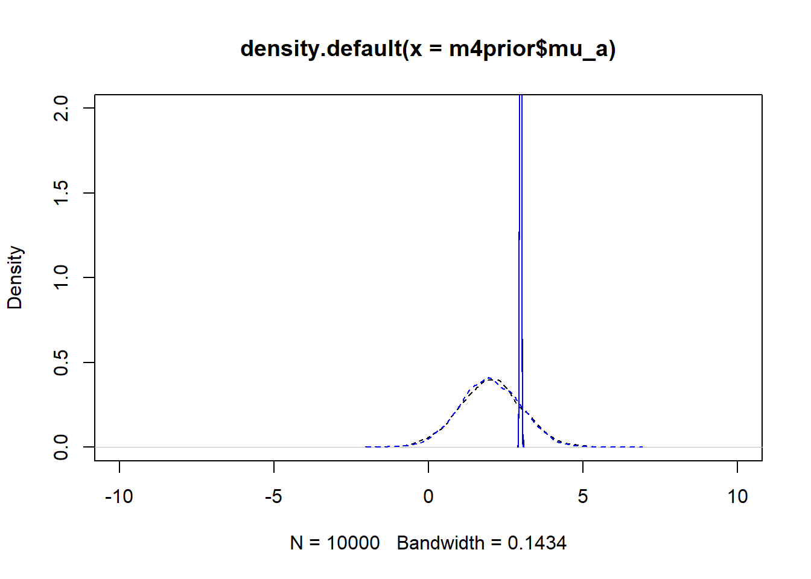
#showing density plots for b0
plot(density(m4prior$mu_b), xlim = c (-10,10), ylim = c(0,2), lty=2)
lines(density(m4post$mu_b), lty=1)
lines(density(m4aprior$mu_b), col = "blue", lty=2)
lines(density(m4apost$mu_b), col = "blue", lty=1)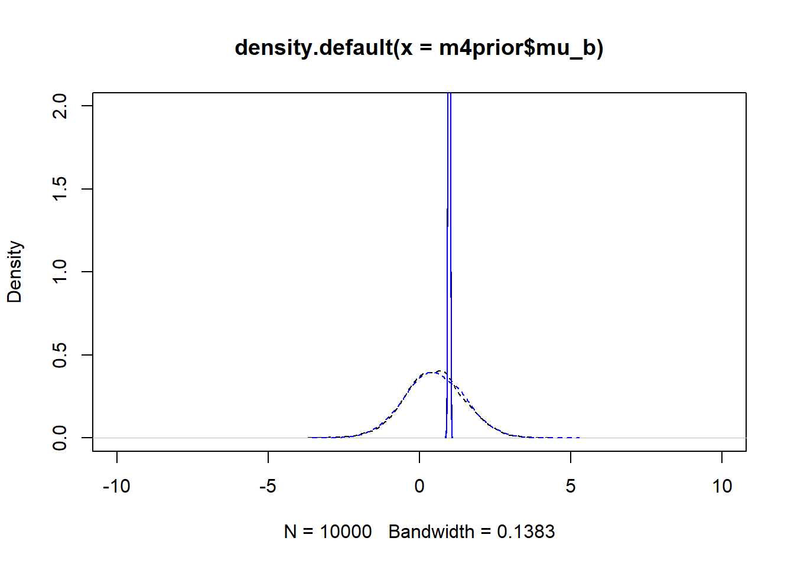
#showing density plots for a1
plot(density(m4prior$a1), xlim = c (-3,3), ylim = c(0,2), lty=2)
lines(density(m4post$a1), lty=1)
lines(density(m4aprior$a1), col = "blue", lty=2)
lines(density(m4apost$a1), col = "blue", lty=1)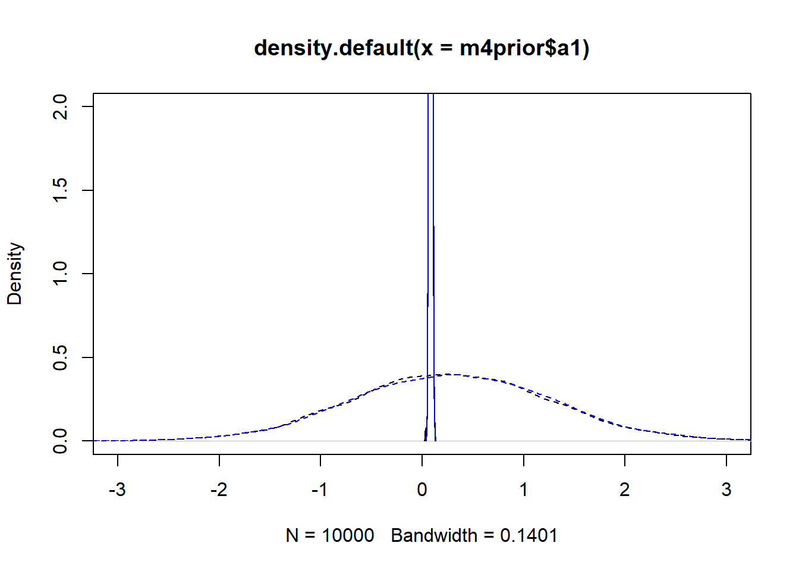
#showing density plots for b1
plot(density(m4prior$b1), xlim = c (-3,3), ylim = c(0,2), lty=2)
lines(density(m4post$b1), lty=1)
lines(density(m4aprior$b1), col = "blue", lty=2)
lines(density(m4apost$b1), col = "blue", lty=1)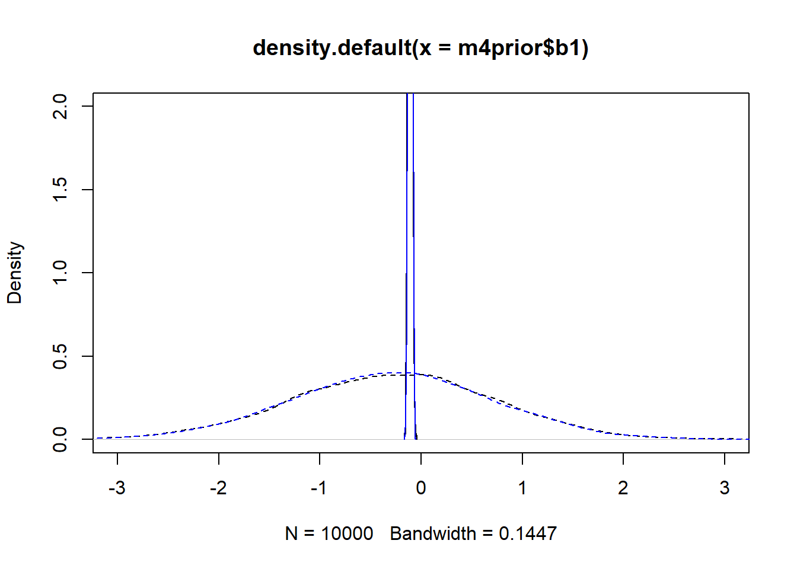
As you can see, up to numerical sampling variability, the results for models 4 and 4a are pretty much the same. That should be expected, since they are the same model, just reformulated for potential efficiency. Also, the posterior distributions are much narrower than the priors. I think that’s a good sign as well, it indicates the data mostly informed the posterior distributions, the priors just helped to keep things efficient.
We can also explore pair plots again, showing them here for model 4.
# a few parameters for each dose
#low dose
pairs(fl[[4]]$fit, pars = c("a0[1]","a0[2]","a0[3]","a0[4]","a1"))Warning in par(usr): argument 1 does not name a graphical parameter
Warning in par(usr): argument 1 does not name a graphical parameter
Warning in par(usr): argument 1 does not name a graphical parameter
Warning in par(usr): argument 1 does not name a graphical parameter
Warning in par(usr): argument 1 does not name a graphical parameter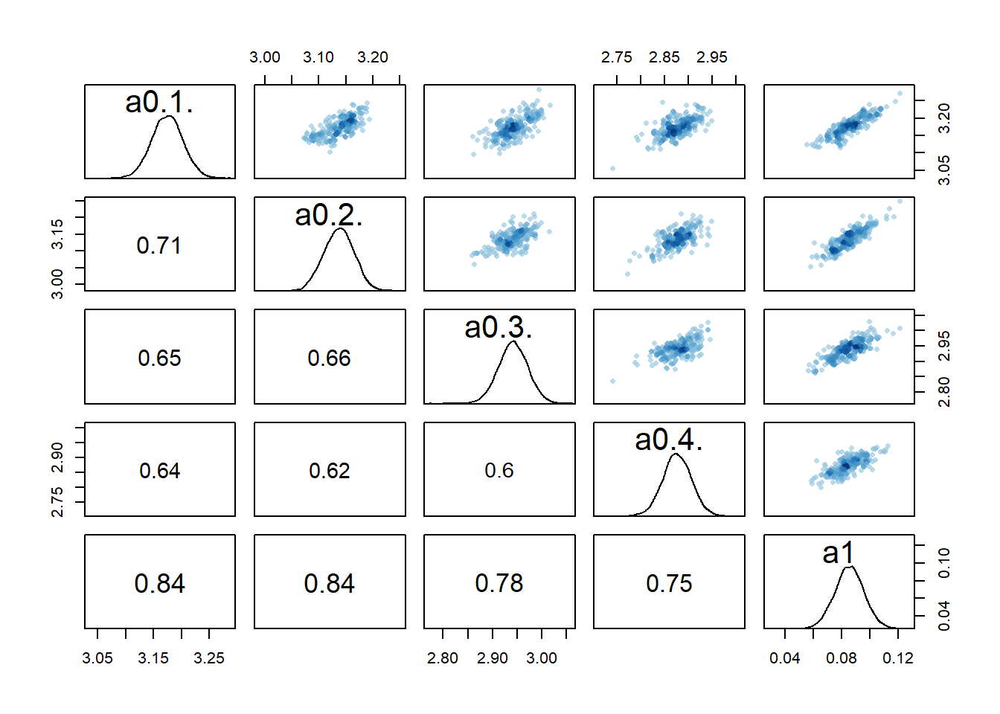
#medium dose
pairs(fl[[4]]$fit, pars = c("a0[8]","a0[9]","a0[10]","a0[11]","a1"))Warning in par(usr): argument 1 does not name a graphical parameter
Warning in par(usr): argument 1 does not name a graphical parameter
Warning in par(usr): argument 1 does not name a graphical parameter
Warning in par(usr): argument 1 does not name a graphical parameter
Warning in par(usr): argument 1 does not name a graphical parameter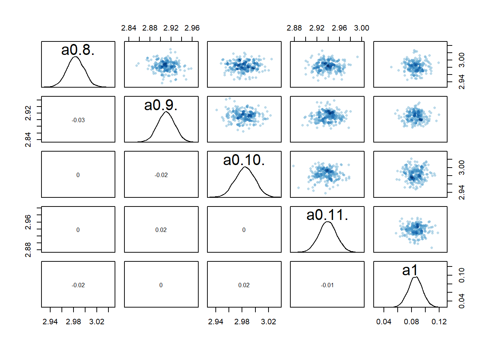
#high dose
pairs(fl[[4]]$fit, pars = c("a0[16]","a0[17]","a0[18]","a0[19]","a1"))Warning in par(usr): argument 1 does not name a graphical parameter
Warning in par(usr): argument 1 does not name a graphical parameter
Warning in par(usr): argument 1 does not name a graphical parameter
Warning in par(usr): argument 1 does not name a graphical parameter
Warning in par(usr): argument 1 does not name a graphical parameter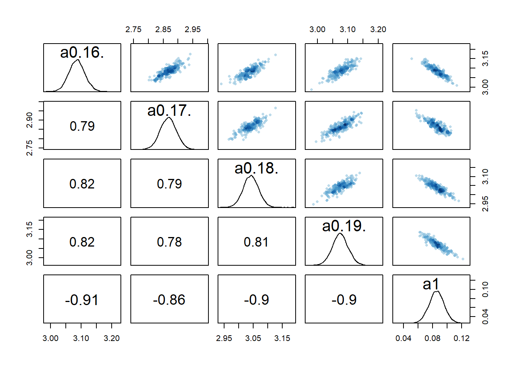
# mean of a0 prior
pairs(fl[[4]]$fit, pars = c("mu_a","mu_b","a1","b1"))Warning in par(usr): argument 1 does not name a graphical parameter
Warning in par(usr): argument 1 does not name a graphical parameter
Warning in par(usr): argument 1 does not name a graphical parameter
Warning in par(usr): argument 1 does not name a graphical parameter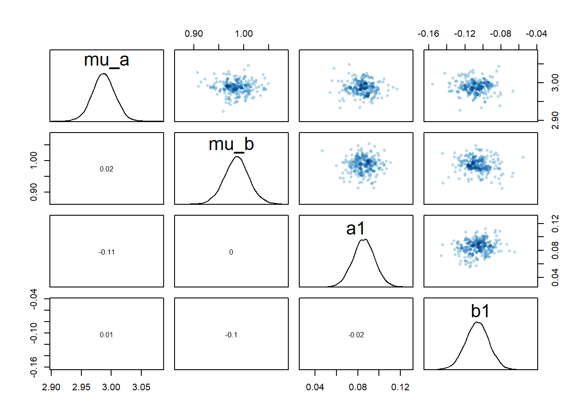
#saving one plot so I can use as featured image
png(filename = "featured.png", width = 6, height = 6, units = "in", res = 300)
pairs(fl[[4]]$fit, pars = c("mu_a","mu_b","a1","b1"))Warning in par(usr): argument 1 does not name a graphical parameter
Warning in par(usr): argument 1 does not name a graphical parameter
Warning in par(usr): argument 1 does not name a graphical parameter
Warning in par(usr): argument 1 does not name a graphical parameterdev.off()png
2 We still see the same issue with correlations among the parameters for dose levels where \(a_1\) is acting, though the correlations are not as extreme. They are also minor between the overall estimates for the mean of the \(a_0\) and \(b_0\) parameters and \(a_1\) and \(b_1\). I interpret this to mean that the adaptive sampling helped somewhat with the identifiability and overfitting problem, though it seems to not fully resolve it. The fact that we gave each individual their own \(a_{0,i}\) and \(b_{0,i}\) values allows those parameters to still “absorb” some of the dose-dependent signal in \(a_1\) and \(b_1\).
We can also again look at the numerical outputs from the precis function.
# model 4
print(precis(fl[[4]]$fit,depth=1),digits = 2)48 vector or matrix parameters hidden. Use depth=2 to show them. mean sd 5.5% 94.5% n_eff Rhat4
mu_a 2.987 0.020 2.956 3.018 14437 1
mu_b 0.986 0.025 0.946 1.026 14777 1
sigma_a 0.093 0.016 0.071 0.121 10722 1
sigma_b 0.119 0.020 0.092 0.153 12199 1
a1 0.086 0.010 0.069 0.102 2170 1
b1 -0.107 0.013 -0.128 -0.085 2230 1
sigma 1.062 0.052 0.983 1.148 13477 1# model 4a
print(precis(fl[[6]]$fit,depth=1),digits = 2)48 vector or matrix parameters hidden. Use depth=2 to show them. mean sd 5.5% 94.5% n_eff Rhat4
mu_a 2.987 0.019 2.956 3.017 3803 1
mu_b 0.986 0.025 0.946 1.026 3259 1
sigma_a 0.093 0.016 0.072 0.121 4376 1
sigma_b 0.119 0.020 0.092 0.153 4285 1
a1 0.086 0.010 0.069 0.103 4267 1
b1 -0.106 0.013 -0.126 -0.084 3861 1
sigma 1.062 0.051 0.985 1.148 10624 1The numerics confirm that the two models lead to essentially the same results. The values for n_eff differ between models, though neither model is consistently larger. This suggests that each model formulation had advantages in sampling for some of the parameters.
In terms of run times, there wasn’t much difference, with 7 minutes for model 4 versus 10 minutes for model 4a (much better than models 1-3).
If we compare the parameter estimates with the true values and those found for models 1 and 3 above, we find that again the true \(\mu_a\), \(\mu_b\) and \(\sigma\) are estimated fairly well. Estimates for \(a_1\) and \(b_1\) are now also pretty good, and the credible intervals are less wide.
Now let’s briefly run the compare function too and include model 3 as well. In addition to using WAIC for comparison, I’m also including PSIS. Read about it in the Statistical Rethinking book. One advantage of PSIS is that it gives warnings if the estimates might not be reliable. You see that this happens here.
compare(fl[[3]]$fit,fl[[4]]$fit,fl[[6]]$fit, func = WAIC) WAIC SE dWAIC dSE pWAIC weight
fl[[4]]$fit 831.0751 23.40197 0.0000000 NA 42.58290 0.4659494
fl[[6]]$fit 831.6133 23.39119 0.5382072 0.3058545 42.76359 0.3560152
fl[[3]]$fit 832.9992 23.42829 1.9241902 2.5641934 43.73720 0.1780353compare(fl[[3]]$fit,fl[[4]]$fit,fl[[6]]$fit, func = PSIS)Some Pareto k values are high (>0.5). Set pointwise=TRUE to inspect individual points.
Some Pareto k values are high (>0.5). Set pointwise=TRUE to inspect individual points.
Some Pareto k values are high (>0.5). Set pointwise=TRUE to inspect individual points. PSIS SE dPSIS dSE pPSIS weight
fl[[4]]$fit 839.5114 24.33096 0.0000000 NA 46.80107 0.4616132
fl[[6]]$fit 839.8745 24.30905 0.3630563 0.5782962 46.89419 0.3849830
fl[[3]]$fit 841.7147 24.33321 2.2033083 2.7044971 48.09493 0.1534037We do find that model 4/4a performs a bit better, but not by much. Note that model 4/4a has more actual parameters, but the effective parameters (which is described by pWAIC) is a bit smaller.
Overall, this suggests that the adaptive pooling approach helped to estimate results more precisely and efficiently and is the best of the models.
Model 5
As stated above, due to a typo in my code, the above models, including 4/4a, initially produced estimates for \(a_1\) and \(b_1\) that were not close to those (I thought I) used to generate the data. Based on the pair plots, I suspected non-identifiability issues and wanted to explore what would happen if I removed the dose.
If we now look at the pairs plots, maybe not surprisingly, the correlations between individual \(a_0\) parameters are gone.
# a few parameters for each dose
#low dose
pairs(fl[[7]]$fit, pars = c("a0[1]","a0[2]","a0[3]","a0[4]","a0[5]"))Warning in par(usr): argument 1 does not name a graphical parameter
Warning in par(usr): argument 1 does not name a graphical parameter
Warning in par(usr): argument 1 does not name a graphical parameter
Warning in par(usr): argument 1 does not name a graphical parameter
Warning in par(usr): argument 1 does not name a graphical parameter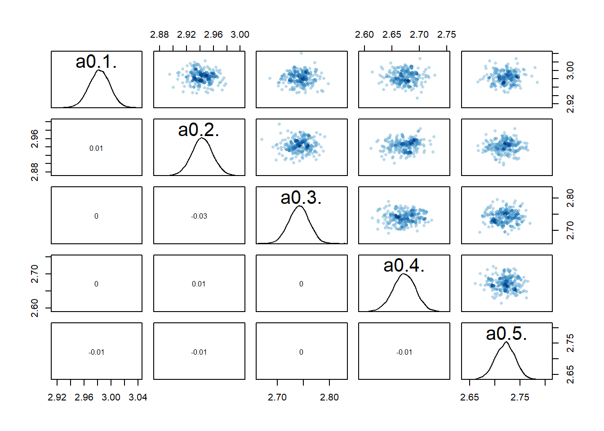
#medium dose
pairs(fl[[7]]$fit, pars = c("a0[8]","a0[9]","a0[10]","a0[11]","a0[12]"))Warning in par(usr): argument 1 does not name a graphical parameter
Warning in par(usr): argument 1 does not name a graphical parameter
Warning in par(usr): argument 1 does not name a graphical parameter
Warning in par(usr): argument 1 does not name a graphical parameter
Warning in par(usr): argument 1 does not name a graphical parameter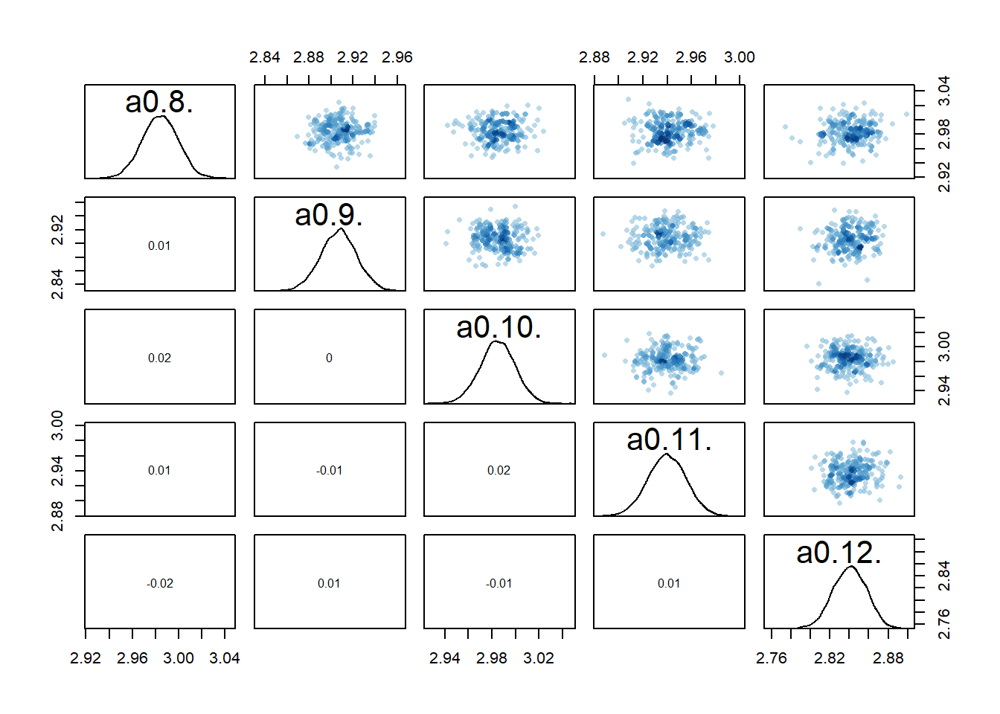
#high dose
pairs(fl[[7]]$fit, pars = c("a0[16]","a0[17]","a0[18]","a0[19]","a0[20]"))Warning in par(usr): argument 1 does not name a graphical parameter
Warning in par(usr): argument 1 does not name a graphical parameter
Warning in par(usr): argument 1 does not name a graphical parameter
Warning in par(usr): argument 1 does not name a graphical parameter
Warning in par(usr): argument 1 does not name a graphical parameter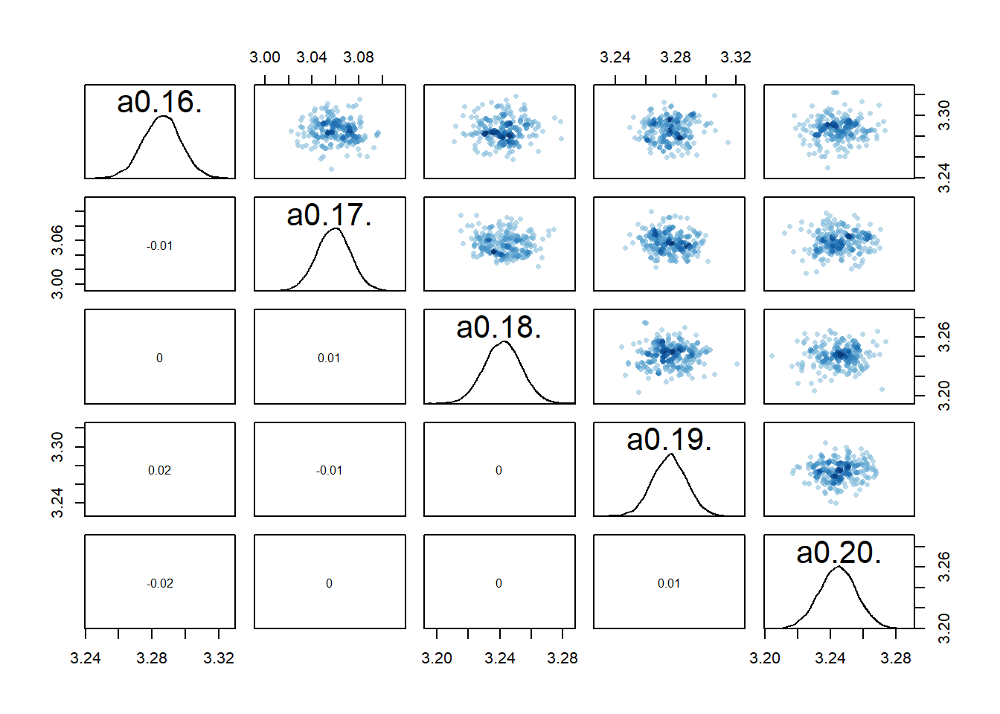
The model estimates the parameters reasonably well
a0mean = mean(precis(fl[[7]]$fit,depth=2,"a0")$mean)
b0mean = mean(precis(fl[[7]]$fit,depth=2,"b0")$mean)
print(precis(fl[[7]]$fit,depth=1),digits = 2)48 vector or matrix parameters hidden. Use depth=2 to show them. mean sd 5.5% 94.5% n_eff Rhat4
sigma 1.1 0.052 0.98 1.1 16614 1print(c(a0mean,b0mean))[1] 3.0031331 0.9655931It doesn’t seem quite as good as the previous models.
compare(fl[[3]]$fit,fl[[4]]$fit,fl[[7]]$fit) WAIC SE dWAIC dSE pWAIC weight
fl[[4]]$fit 831.0751 23.40197 0.000000 NA 42.58290 0.5705560
fl[[3]]$fit 832.9992 23.42829 1.924190 2.564193 43.73720 0.2180046
fl[[7]]$fit 833.0604 23.39781 1.985346 2.445539 43.82551 0.2114394And of course the main problem with this model: It can’t answer any question about the role of dose, since we removed that component from the model! So while ok to explore, scientifically not useful since it can’t help us address the question we want to answer regarding the potential impact of dose.
Computing predictions
Looking at parameters as we did so far is useful. But we also want to see how model predictions look. It is possible to have a model that predicts overall well, even if the parameter estimates are not right (of course, for real, non-simulated data, we generally don’t know what the “right” values are). The opposite can’t happen, if you have the right model and the parameter estimates are right, the predictions will be good. But again, you never know if you have the right model, i.e., the model that captures the process underlying the data. For any real data, you almost certainly do not. Thus you could get parameters that look “right” (e.g. narrow credible intervals) but the model is still not good. Our models 2 and 2a fall into that category, as you’ll see below.
That is all to say, it’s important to look at model predicted outcomes, not just the parameters. So let’s plot the predictions implied by the fits for the models. The general strategy for that is to use the parameter estimates in the posterior, put them in the model, and compute the predictions. We are essentially going through the same steps we did to generate the data. Only now we start with the estimated values. While this could all be manually coded, we happily don’t need to do so. The rethinking package has some helper functions for that (sim and link).
The code below produces predictions, both for the deterministic mean trajectory \(\mu\), and the actual outcome, \(Y\), which has added variation due to \(\sigma\).
#small data adjustment for plotting
plotdat <- fitdat %>% data.frame() %>%
mutate(id = as.factor(id)) %>%
mutate(dose = dose_cat)
#this will contain all the predictions from the different models
fitpred = vector(mode = "list", length = length(fl))
# we are looping over each fitted model
for (n in 1:length(fl))
{
#get current model
nowmodel = fl[[n]]$fit
#make new data for which we want predictions
#specifically, more time points so the curves are smoother
timevec = seq(from = 0.1, to = max(fitdat$time), length=100)
Ntot = max(fitdat$id)
#new data used for predictions
preddat = data.frame( id = sort(rep(seq(1,Ntot),length(timevec))),
time = rep(timevec,Ntot),
dose_adj = 0
)
#add right dose information for each individual
for (k in 1:Ntot)
{
#dose for a given individual
nowdose = unique(fitdat$dose_adj[fitdat$id == k])
nowdose_cat = unique(fitdat$dose_cat[fitdat$id == k])
#assign that dose
#the categorical values are just for plotting
preddat[(preddat$id == k),"dose_adj"] = nowdose
preddat[(preddat$id == k),"dose_cat"] = nowdose_cat
}
# pull out posterior samples for the parameters
post <- extract.samples(nowmodel)
# estimate and CI for parameter variation
# this uses the link function from rethinking
# we ask for predictions for the new data generated above
linkmod <- rethinking::link(nowmodel, data = preddat)
#computing mean and various credibility intervals
#these choices are inspired by the Statistical Rethinking book
#and purposefully do not include 95%
#to minimize thoughts of statistical significance
#significance is not applicable here since we are doing bayesian fitting
modmean <- apply( linkmod$mu , 2 , mean )
modPI79 <- apply( linkmod$mu , 2 , PI , prob=0.79 )
modPI89 <- apply( linkmod$mu , 2 , PI , prob=0.89 )
modPI97 <- apply( linkmod$mu , 2 , PI , prob=0.97 )
# estimate and CI for prediction intervals
# this uses the sim function from rethinking
# the predictions factor in additional uncertainty around the mean (mu)
# as indicated by sigma
simmod <- rethinking::sim(nowmodel, data = preddat)
# mean and credible intervals for outcome predictions
# modmeansim should agree with above modmean values
modmeansim <- apply( simmod , 2 , mean )
modPIsim <- apply( simmod , 2 , PI , prob=0.89 )
#place all predictions into a data frame
#and store in a list for each model
fitpred[[n]] = data.frame(id = as.factor(preddat$id),
dose = as.factor(preddat$dose_cat),
predtime = preddat$time,
Estimate = modmean,
Q79lo = modPI79[1,], Q79hi = modPI79[2,],
Q89lo = modPI89[1,], Q89hi = modPI89[2,],
Q97lo = modPI97[1,], Q97hi = modPI97[2,],
Qsimlo=modPIsim[1,], Qsimhi=modPIsim[2,]
)
} #end loop over all modelsCreating plots of the results
Now that we got the predictions computed, we can plot them and compare to the data. It turns out that trying to plot all the different credible intervals makes the plot too busy, so I’m only showing a few. You can play around by turning the commented lines on.
#list for storing all plots
plotlist = vector(mode = "list", length = length(fl))
#looping over all models, creating and storing a plot for each
for (n in 1:length(fl))
{
#adding titles to plots
title = fl[[n]]$model
plotlist[[n]] <- ggplot(data = fitpred[[n]], aes(x = predtime, y = Estimate, group = id, color = dose ) ) +
geom_line() +
#geom_ribbon( aes(x=time, ymin=Q79lo, ymax=Q79hi, fill = dose), alpha=0.6, show.legend = F) +
geom_ribbon(aes(x=predtime, ymin=Q89lo, ymax=Q89hi, fill = dose, color = NULL), alpha=0.3, show.legend = F) +
#geom_ribbon(aes(x=time, ymin=Q97lo, ymax=Q97hi, fill = dose), alpha=0.2, show.legend = F) +
geom_ribbon(aes(x=predtime, ymin=Qsimlo, ymax=Qsimhi, fill = dose, color = NULL), alpha=0.1, show.legend = F) +
geom_point(data = plotdat, aes(x = time, y = outcome, group = id, color = dose), shape = 1, size = 2, stroke = 2) +
scale_y_continuous(limits = c(-30,50)) +
labs(y = "Virus load",
x = "days post infection") +
theme_minimal() +
ggtitle(title)
}Showing the plots
Here are the plots for all models we considered. I’m plotting them in the order I discussed the models above, so the ones we compared above are shown right below each other.
It’s a bit hard to see, but each plot contains for each individual the data as symbols, the estimated mean as line, and the 89% credible interval and prediction interval as shaded areas. The prediction interval is the light shaded area. If you enlarge the images, you should be able to see it.
Models 1 and 3
plot(plotlist[[1]])plot(plotlist[[3]])Despite differences in estimates for the dose related parameters, the predicted outcomes of the models are very similar. In fact, it’s hard to tell any difference by just looking at the plots (but they are slightly different, I checked). Thus, despite the inability of these models to provide precises estimates of all the parameter values, the predictions/outcomes are fine, they fit the data well.
Models 2 and 2a
For models 2 and 2a, recall that the only variation is for dose, we didn’t allow variation among individuals. That’s reflected in the plots. The credible intervals based on parameters are tight, but because the variability, \(\sigma\), had to account for all the differences, the prediction intervals are very wide.
plot(plotlist[[2]])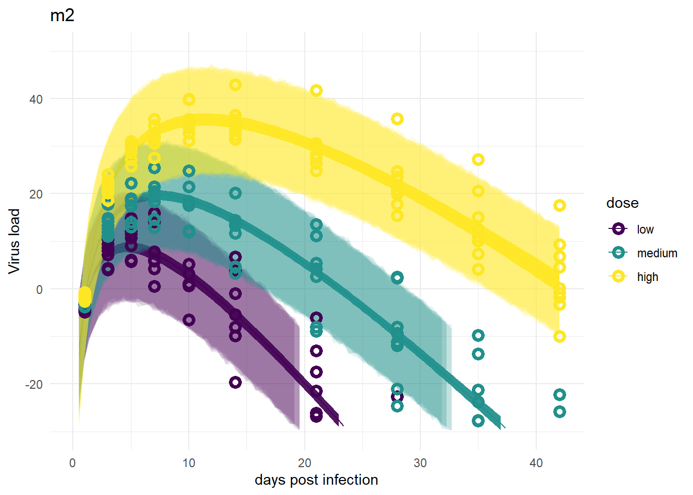
plot(plotlist[[5]])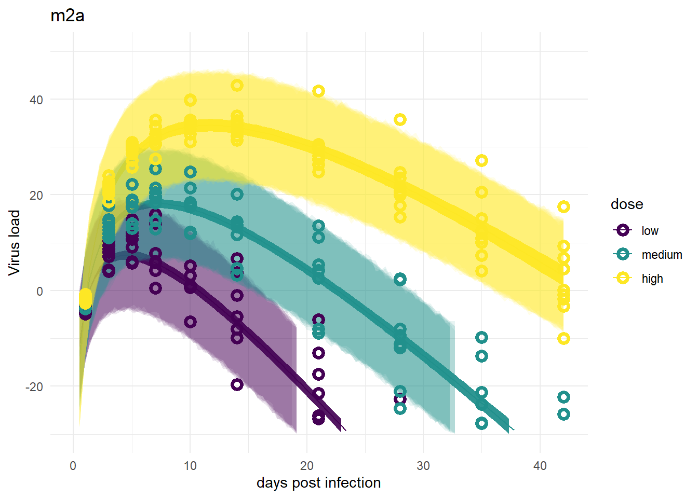
Models 4 and 4a
These models look good again, and very similar to models 1 and 3.
plot(plotlist[[4]])plot(plotlist[[6]])Model 5
The model fits look fine, suggesting that one parameter for each individual is enough to capture the data. That’s not surprising. However, this of course does not allow us to ask and answer any scientific questions about the role of dose.
plot(plotlist[[7]])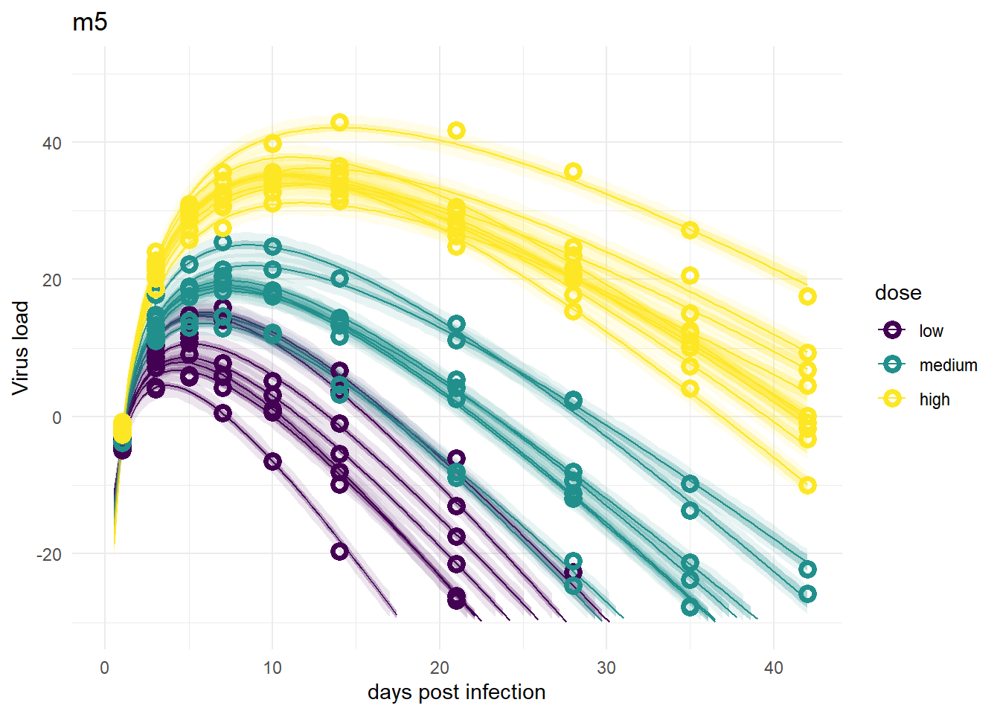
So overall, the figures make sense It seems that if we want to do prediction, all models that include individual variability are fine, models 2/2a are not great. If we wanted to estimate the model parameters, specifically \(a_1\) and \(b_1\), models 1 and 3 and of course 5 don’t work. In that case, model 2/2a works ok. I consider model 4/4a the best one overall.
For another example and more discussion of estimation versus prediction, see e.g. Section 6.1. in Statistical Rethinking, as well as 9.5.4 (all referring to the 2nd edition of the book).
Summary and continuation
To sum it up, we fit several models to the simulated time-series data to explore how different model formulations might or might not impact results. For this post, I used the - very nice! - rethinking package. In the next post, I’ll repeat the fitting again, now using brms. Since brms is very widely used and has some capabilities that go beyond what rethinking can do, I think it’s worth reading the next post.
If you don’t care about brms, you can hop to this post, where I discuss a few further topics and variations. Any fitting done in that post is with ulam/rethinking, so you don’t need to look at the brms post, but I still suggest you do 😁.
Citation
BibTeX citation:
@online{handel2022,
author = {Andreas Handel},
editor = {},
title = {Bayesian Analysis of Longitudinal Multilevel Data Using Brms
and Rethinking - Part 2},
date = {2022-02-23},
url = {https://www.andreashandel.com/posts/2022-02-23-longitudinal-multilevel-bayes-2},
langid = {en}
}
For attribution, please cite this work as:
Andreas Handel. 2022. “Bayesian Analysis of Longitudinal
Multilevel Data Using Brms and Rethinking - Part 2.” February 23,
2022. https://www.andreashandel.com/posts/2022-02-23-longitudinal-multilevel-bayes-2.